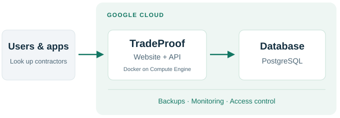

TRADEPROOF · CLOUD OPERATIONS
Building and supporting
a cloud platform
I built and support the cloud infrastructure behind TradeProof, a contractor verification platform. My work spans Azure provisioning and Google Cloud production operations.
How the live platform works

INITIAL V1.2 BUILD
Microsoft Azure
Bicep · Container Apps
Private networking · Key Vault
PRODUCTION PLATFORM
Google Cloud
Compute Engine · Artifact Registry
Cloud Storage · Cloud Monitoring
What I handled
- Deploy: Docker releases and automated checks with GitHub Actions.
- Secure: Network access, IAM permissions, secrets and staff MFA.
- Support: Fix startup errors, permission issues and failed scheduled jobs.
- Recover: Verify backups, test restores and check service health.
9.5MLicense records
at launch
at launch
21Release checks
passed
passed
RestoresFull source and target
recovery tested
recovery tested
Results from the October 8 launch and October 11 release, 2026. Supporting details in the full GitHub case study.